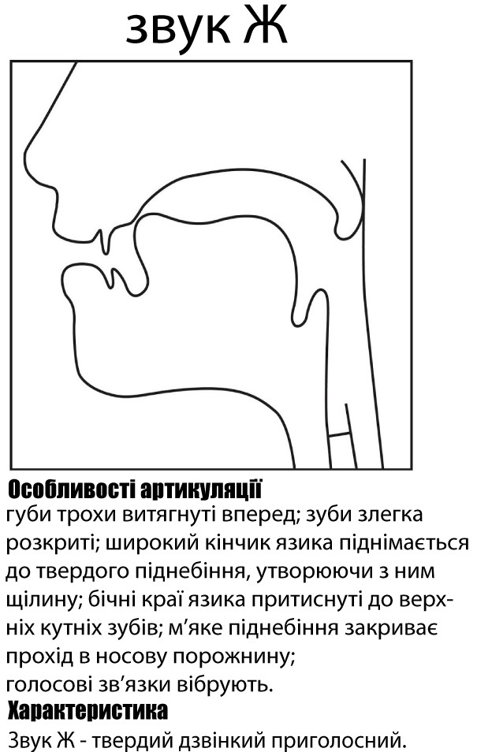

Класифікація приголосних
Приголосні звуки в українській мові поділяються:
За місцем творення
| Губні | ||||
|---|---|---|---|---|
| губно-губні: | губно-зубні: | |||
| [б], [п], [в], [м]; | [ф]; | |||
| Язикові | ||||
| передньоязикові | середньоязикові | задньоязикові | ||
| зубні | альвеолярні | зубно-альвеолярні | [й] | [к], [х], [ґ] |
| [д], [т], [з], [з'], [с], [с'], [дз], [дз'], [ц], [ц'], [л], [н]; | [р], [р'], [ж], [ш], [дж], [ч]; | [д'], [т'], [л'], [н']; | ||
| Глоткові | ||||
| [г] | ||||
За способом творення
| Зімкнені | |||
|---|---|---|---|
| Щілинні | |||
| Афрікати | |||
| Дрижачі | |||
Зімкнено-проривні: [б], [п], [д], [д'], [т], [т'], [ґ], [к];
Зімкнено-прохідні: [м], [н], [н'];
● Щілинні:
Серединні: [в], [ф], [з], [з'], [с], [с'], [й], [ж], [ш], [х], [г];
Бокові: [л], [л'];
● Афрікати: [дз], [дз'], [ц], [ц'], [дж], [ч];
● Дрижачі: [р], [р']
За участю голосу й шуму:
● Сонорні: [в], [м], [л], [л'], [н], [н'], [р], [р'], [й];
● Шумні:
Дзвінкі: [б], [д], [д'], [з], [з'], [дз], [дз'], [ж], [дж], [ґ], [г];
Глухі: [п], [ф], [т], [т'], [с], [с'], [ц], [ц'], [ш], [ч], [к], [х].
За ступенем палаталізації:
● Тверді: [д] , [т], [з], [с], [дз], [ц], [н], [л], [р]
● М'які: [д'], [т'], [з'], [с'], [дз'], [ц'], [н'], [л'], [р'].
-

[б] — губно-губний, зімкнено-проривний, дзвінкий, твердий. Щелепи розташовані близько одна до одної. Губи на початку вимови зімкнені, напружені. При вимові зімкнення раптово розривається видихуваним струменем повітря, внаслідок чого утворюється специфічний шум. За ізольованої вимови язик трохи відтягнутий назад та піднятий у задній частині до твердого піднебіння, якщо вимова в потоці мовлення його положення залежить від наступного та попереднього звуків. М’яке піднебіння закриває прохід в носову порожнину. Голосові зв’язки вібрують.
-
[в] — щільний, серединний, сонорний, твердий. Щелепи розташовані близько одна до одної. Два способи вимови: нижня губа зближується з верхньою губою, утворюючи круглу щілину, крізь яку проходить струмінь повітря й дає характерний шум (губно-губний); вузька щілина утворюється між нижньою губою й верхніми зубами(губно-зубний). Під час ізольованої вимови язик витягнутий назад більше, ніж при вимові [б], задня частина піднята до твердого піднебіння; під час вимови в потоці мовлення язик не має фіксованого положення та залежить від попереднього та наступного звуків. Повітря досить вільно виходить назовні через щілину, частина шуму незначна. М’яке піднебіння закриває прохід в носову порожнину. Голосові зв’язки вібрують.
-
[г] ㅡ фарингальний, щілинний, дзвінкий, твердий. Щелепи розташовані близько одна до одної. Губи не напружені, привідкриті, активної участі не беруть. Кінчик язика тримається біля нижніх зубів під час артикуляції ізольованого звука. Корінь язика відтягується назад і зближується з задньою стінкою глотки. Крізь цю щілину струмінь повітря швидко й різко проходить, утворює характерний шум. М’яке піднебіння закриває прохід в носову порожнину. Голосові зв’язки вібрують.
-

[д] ㅡ передньоязиковий, зубний, зімкнено-проривний, дзвінкий, твердий. Щелепи розташовані близько одна до одної. Губи ненапружені, привідкриті. Зімкнення утворюється між кінчиком язика з передніми верхніми зубами та альвеолами. Середня спинка язика ввігнута, кінчик язика піднімається вгору до альвеол. Вимовляється за рахунок швидкого розмикання язика з зубами й альвеолами, що супроводжується видихом повітря. М’яке піднебіння закриває прохід в носову порожнину. Голосові зв'язки під час артикуляції вібрують.
-
[з] ㅡ передньоязиковий, зубний, щільний, серединний, дзвінкий, твердий. Щелепи розташовані близько одна до одної. Губи трохи відкриті, злегка розтягненні. Широкий кінчик язика впирається в нижні різці, а спинка торкається іклів та різців, при цьому посередині язика утворюється вузька щілина у формі жолобка. Краї язика притиснуті до верхніх бокових зубів і частково до твердого піднебіння. Повітряний струмінь протискується крізь щілину, вдаряється об верхні різці, внаслідок цього утворюється різкий шум, що нагадує свист. За цією акустичною ознакою називається свистячим. М’яке піднебіння закриває прохід в носову порожнину. Голосові зв'язки під час артикуляції вібрують
-

[ж] ㅡ передньоязиковий, альвеолярний, щільний, серединний, дзвінкий, твердий. Щелепи розташовані близько одна до одної. Губи трохи заокруглені та випинають уперед. Кінчик язика разом із прилеглою до нього спинкою потовщується й відтягається назад. Під час вимови утворюються посередині язика одночасно дві щілини: перша - між широким кінчиком язика й переднім краєм твердого піднебіння навпроти альвеол, друга - між задньою частиною спинки язика й переднім краєм м'якого піднебіння. Середина язика ввігнута. Проходячи крізь дві щілини, повітряний струмінь утворює характерний шум, що нагадує шипіння. За цією акустичною ознакою називається шиплячим. М’яке піднебіння закриває прохід в носову порожнину. Голосові зв'язки під час артикуляції вібрують.
-

[к] ㅡ задньоязиковий, зімкнено-проривний, глухий, твердий. Щелепи розташовані близько одна до одної. Губи не напружені, привідкриті, активної участі не беруть. Кінчик язика тримається за нижніми зубами. Задня спинка язика підіймається до м'якого піднебіння і на рівні останніх кутніх зубів утворює з ним зімкнення. Унаслідок раптового прориву цього зімкнення струменем повітря утворюється специфічний для цих приголосних шум. М’яке піднебіння закриває прохід в носову порожнину. Голосові зв’язки не вібрують.
-

[л] ㅡ передньоязиковий,зубний, щілинний, належать до групи бокових, сонорний, твердий. Щелепи розташовані близько одна до одної. Губи ненапружені, привідкриті, активної участі не беруть. Кінчик язика напружений, впирається у верхні різці або альвеоли, задня частина спинки трохи піднята вгору. Краї язика з одного боку або з двох боків опущені й утворюють щілини для виходу повітряного струменя. Вимовляється за рахунок проходження повітря через щілину. М’яке піднебіння закриває прохід в носову порожнину. Голосові зв'язки під час артикуляції вібрують.
-
[м] — губно-губний, зімкнено-прохідний, носовий, сонорний, твердий. Щелепи розташовані близько одна до одної. Губи зімкнені, не так напружені, внаслідок чого відсутній характерний вибух. Під час ізольованої вимови язик трохи відтягнений назад, його задня частина піднята до твердого піднебіння; під час вимови в потоці мовлення язик не має фіксованого положення та залежить від попереднього та наступного звуків. М'яке піднебіння опускається, повітря проходить крізь носову порожнину. Голосові зв’язки вібрують.
-

[н] ㅡ передньоязиковий, зубний, зімкнений носовий, сонорний, твердий. Щелепи розташовані близько одна до одної. Губи ненапружені, привідкриті, активної участі не беруть. Ккінчик язика напружений, змикається з передніми верхніми зубами та альвеолами, з внутрішньої сторони прилягає до нижніх зубів, середня спинка язика ввігнута. М'яке піднебіння опускається й відкриває прохід у носову порожнину, повітряний струмінь частково виходить крізь носову порожнину. Зімкнення раптово розривається сильним повітряним струменем, виникає характерний шум. Голосові зв'язки під час артикуляції вібрують.
-

[р] ㅡ передньоязиковий, альвеолярний, дрижачий, сонорний, твердий. Щелепи розташовані близько одна до одної. Губи розслаблені, привідкриті, активної участі в артикуляції не приймають. Кінчик язика напружений і загнутий до альвеол, під тиском повітряного струменя декілька разів вібрує до альвеол, при цьому з'являється характерний шум. М’яке піднебіння закриває прохід в носову порожнину. Голосові зв'язки під час артикуляції вібрують.
-

[с] ㅡ передньоязиковий, зубний, щільний, серединний, глухий, твердий. Щелепи розташовані близько одна до одної. Губи трохи відкриті та злегка розтягненні. Широкий кінчик язика впирається в нижні різці, а спинка торкається іклів та різців, при цьому посередині язика утворюється вузька щілина у формі жолобка. Краї язика притиснуті до верхніх бокових зубів і частково до твердого піднебіння. Повітряний струмінь протискується крізь щілину, вдаряється об верхні різці, внаслідок цього утворюється різкий шум, що нагадує свист. За цією акустичною ознакою називається свистячим. М’яке піднебіння закриває прохід в носову порожнину. Голосові зв'язки під час артикуляції не вібрують.
-

[т] ㅡ передньоязиковий, зубний, зімкнено-проривний, глухий, твердий. Щелепи розташовані близько одна до одної. Губи ненапружені. Кінчик язика напружений, та змикається з передніми верхніми зубами та початком альвеол трохи вище, ніж під час вимови [д]. Кінчик язика підіймається вгору до альвеол, його середня спинка ввігнута. Зімкнення, що утворюється між передньою частиною спинки язика і верхніми зубами, раптово розривається повітряним струменем, виникає характерний шум, який ослаблений унаслідок меншої напруженості мовних органів. М’яке піднебіння закриває прохід в носову порожнину. Голосові зв'язки під час артикуляції не вібрують.
-

[ф] — глухий, губно-зубний, щільний, серединний, твердий. Щелепи розташовані близько одна до одної. Нижня губа дотикається до верхніх передніх зубів. Задня спинка язика піднята до м'якого піднебіння, якщо вимова в потоці мовлення його положення залежить від наступного та попереднього звуків. Через утворену плоску щілину проходить повітряний струмінь, тертя якого створює характерний шум. М’яке піднебіння закриває прохід в носову порожнину. Голосові зв’язки не вібрують.
-

[х] ㅡ задньоязиковий, зімкнено-проривний, глухий, твердий. Щелепи розташовані близько одна до одної. Губи не напружені, привідкриті, активної участі не беруть. Задня частина спинки язика зближується із заднім краєм твердого піднебіння і частиною м'якого піднебіння, внаслідок чого утворюється щілина. Видихуване повітря, проходячи крізь щілину, утворює характерний шум. М’яке піднебіння закриває прохід в носову порожнину. Голосові зв’язки не вібрують.
-
[ц] ㅡ передньоязиковий, зубний, африкат, глухий, твердий. Щелепи розташовані близько одна до одної. Губи трохи розтягнені. Вимова складається з двох елементів. При вимові першого компонента утворюється зімкнення передньої частини спинки язика з альвеолами, яке не закінчується вибухом, а плавно, без паузи переходить у щілинний елемент. Повітряний струмінь протискується крізь щілину, вдаряється об верхні різці, внаслідок цього утворюється різкий шум. М’яке піднебіння закриває прохід в носову порожнину. Голосові зв'язки під час артикуляції не вібрують.
-

[ш] ㅡ передньоязиковий, альвеолярний, щільний, серединний, глухий, твердий. Щелепи розташовані близько одна до одної. Губи трохи заокруглені та випинають уперед. Кінчик язика разом із прилеглою до нього спинкою потовщується й відтягається назад. Під час вимови утворюються посередині язика одночасно дві щілини: перша - між широким кінчиком язика й переднім краєм твердого піднебіння навпроти альвеол, друга - між задньою частиною спинки язика й переднім краєм м'якого піднебіння. Середина язика ввігнута. Проходячи крізь дві щілини, повітряний струмінь утворює характерний шум, що нагадує шипіння. За цією акустичною ознакою називається шиплячим. М’яке піднебіння закриває прохід в носову порожнину. Голосові зв'язки під час артикуляції не вібрують.
-

[ч] ㅡ передньоязиковий, альвеолярний, африкат, глухий, твердий. Щелепи розташовані близько одна до одної; - губи злегка закруглені та випнуті вперед; Широкий кінчик язика спочатку змикається з краєм твердого піднебіння, а потім це зімкнення поступово переходить у коротку щілину. Одночасно до переднього краю м'якого піднебіння наближається задня частина спинки язика та утворює другу щілину. Середня частина язика ввігнута. Проходячи крізь дві щілини, повітряний струмінь утворює характерний шум. За цією акустичною ознакою називається шиплячим. М’яке піднебіння закриває прохід в носову порожнину. Голосові зв'язки під час артикуляції не вібрують.